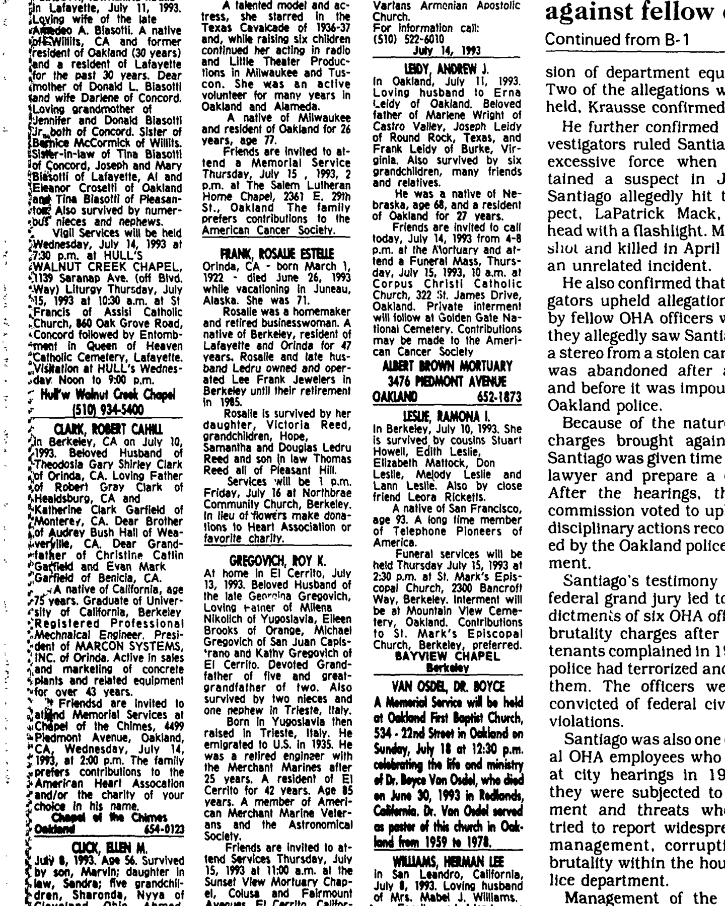

Lann Daniel Leslie b. 1955
Great-uncle of Genevieve Elisa Symanski Nelson, wife of Peter.
Living. As for every living relative on this site, the birth date is given by year only, and no current address is shown.
Lann Daniel Leslie was born in 1955 (according to the family's 2015 tree)1, the son of Williamar Leslie and Edith Evelyn Muir3.
Family
- Parents
- Williamar Leslie 1913–1992 and Edith Evelyn Muir 1916–2018 tradition
- Partner
- Melody Ward
- Children
- Megan Leslie tradition
- Logan Leslie tradition
Life events
| Event | Date | Place and details |
|---|---|---|
| Born | 1955 | According to the family's 2015 tree1 |
| Note | 10 Jul 1993 | Berkeley, California, United States Named with his wife Melody Leslie, mother Edith Leslie, and relatives Stuart Howell, Elizabeth Mattock, and Don Leslie as surviving cousins in the death notice of Ramona I. Leslie (native of San Francisco, age 93, who died in Berkeley on 10 July 1993 and was buried at Mountain View Cemetery,…2 |
Records

Sources
- Peter's tree, danenberg.sql, 2007–2015, personae 96, birth.
- Death Notice: Leslie, Ramona I., Oakland Tribune (Oakland, California), 14 July 1993, p. 14.
1ESUE, RAMONA I. In Berkeley, July 10, 1993. She is survived by cousins Stuart Howell, Edith Leslie, Elizabeth Mattock, Don Leslie, Me(ody Leslie and Lann Leslie. Also by close friend Leora Ricketts. A native of San Francisco, age 93. A long time member of Telephone Pioneers of America. Funeral services will be held Thursday July 15,1993 at 230 p.m. at St. Mark's Episcopal Church, 2300 Bancroft Wav, Berkeley. Interment will be at Mountain View Cemetery, Oakland.
Translation: LESLIE, RAMONA I. In Berkeley, July 10, 1993. She is survived by cousins Stuart Howell, Edith Leslie, Elizabeth Mattock, Don Leslie, Melody Leslie and Lann Leslie. Also by close friend Leora Ricketts. A native of San Francisco, age 93. A long time member of Telephone Pioneers of America. Funeral services will be held Thursday July 15, 1993 at 2:30 p.m. at St. Mark's Episcopal Church, 2300 Bancroft Way, Berkeley. Interment will be at Mountain View Cemetery, Oakland.
Named with his wife Melody Leslie, mother Edith Leslie, and relatives Stuart Howell, Elizabeth Mattock, and Don Leslie as surviving cousins in the death notice of Ramona I. Leslie (native of San Francisco, age 93, who died in Berkeley on 10 July 1993 and was buried at Mountain View Cemetery, Oakland).
- Peter's tree, danenberg.sql, 2007–2015, parentages 22.